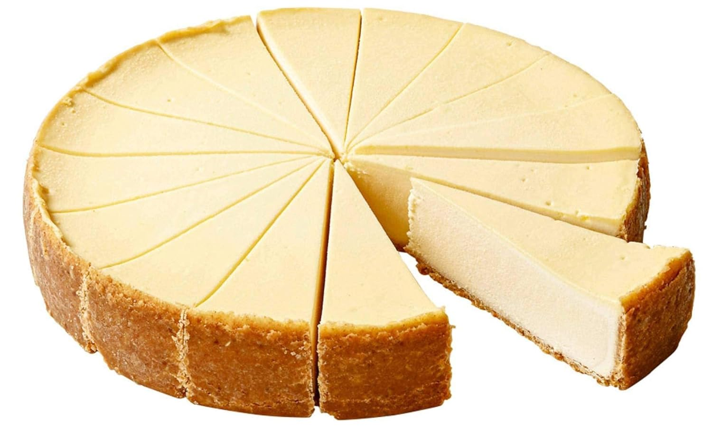

Cheesecake

This cheesecake is a simple recipe but a delicious tasting one. It
has few ingredients and it could be garnished with whatever you
like (frosting, jam, chocolate). Here, we will be making a plain
cheesecake. Enjoy!
Ingredients
- Cream cheese, 2 sticks (8 oz ea)
- Condensed sweet milk, 4 oz can
- 2 egg yolks
- 2 eggs
- Vanilla extract, 1/2 tablespoon
- Pie crust, 9 in
Steps:
- Pre-heat oven to 350 degrees Farenheit
- In a blender place all of the ingredients and blend well
- Pour blended mix into the crust
- Bake for about 70 minutes
- Cheesecake should look inflated when taken out, let it cool
until it settles and garnish if desired.
Home Page